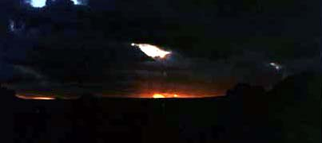
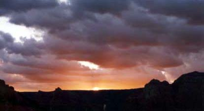

セドナ日記 〜 第３日目 98.5.6
早朝５時起きで日の出を見る

夕日がきれいな場所は、きっと朝日もきれいに違いない。そう思うとどうしても、見たくなるでしょう。朝日が...。そうきれいな夕日を２日連続で見た後は、やっぱり朝日に挑戦しなければならない。５時にアラームをセット。
当日、早朝、アラームに起される。すっかり時差ボケが解消している、僕には、やっぱりかなりの早朝であり、眠かった。しかし、ここは気合い一発！ なんとか、起きる。エアポートメサで日の出を見ることにする。５月の早朝は、結構寒い。
10度以下になったと思う。昼間はもちろんTシャツ１枚ですごせる陽気だが、朝は防寒具なしでは、ちょっと出歩けない。こんなこともあろうかと、日本から持ってきた、登山用の雨合羽をきて、メサにむかう。
メサに着いたが、さすがに誰もいない。風はないが、やっぱり寒い。東の空は、白み始めたが、ちょっと雲が多い。日の出の時間になっても、雲は晴れず、太陽は雲に隠れたままだった。しかし、雲からこもれ日が、筋になって伸び、とても神々しい風景になった。夜が来れば次は朝が来る。当然なんだけど、奇跡かもしれない。だって、ずっと地球は回り続けてるのだから.....。
しばし、夜明けを堪能し、B＆Bに戻る。この日も、贅沢な朝食だった。食べ切れないほど量があるにもかかわらず、とても美味しい、手作りの朝食。食事をしながら、その日の予定を立てた。「ベルロック」と「カシドラルロック」にいって、夕日はまた「エアポートメサ」で。夕食はポーラのお勧め第３段「イタリアンのピエトロ」にすることにし、予約をしてしまった。ちょっと、過密スケジュールだが、すでに行程の半分にさしかかったいる。押さえるところは、おさえておこうということであった。